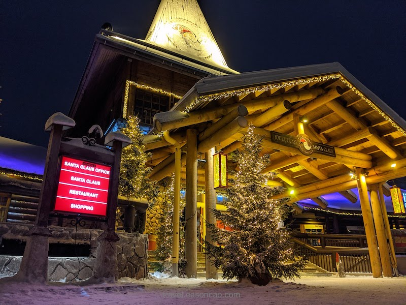

疫情下的芬蘭旅遊 (四)：橫跨北極圈的聖誕老人村 (Santa Claus Village)
馴鹿、哈士奇、雪橇和極光 - 芬蘭人認為聖誕老人來自於 Rovaniemi，意外的讓 Rovaniemi 成為大家官方唯一認證聖誕老人的居住地，來到 Santa Claus Village，你可以到達他的辦公室拜訪聖誕老人。
Santa Claus Village (聖誕老人村)
場景轉換到 Santa Claus Village (聖誕村)，自從有聖誕老人居住在北極圈的傳說，讓芬蘭人認為聖誕老人來自於 Rovaniemi。這也意外的讓 Rovaniemi 成為大家官方唯一認證聖誕老人的居住地，並且在該處設立了聖誕村。
聖誕村大概可以是世界上幾個成功的商業行銷案例了，這個可愛的地方不得不說有種台灣六福村的味道 (瞬間失去一種高級感)。不過你可以在這裡找到聖誕老人的辦公室，聖誕老人一年四季 365 天都會在這裡等待你大駕光臨：

在村內只要你留心觀察，城市標柱上還可以發現了遙遠的台北 (TAIPEI)：
要是想家的話，你還可以從北極圈的郵局寄信回台灣：
橫跨北極圈
在聖誕村橫走個幾步你就可以到達北極圈的交界點，斗大的標誌讓人很難不注意原來橫跨北極圈是前所未有的如此輕鬆：
走著走著來到聖誕村裡的鮭魚餐廳，這間餐廳只賣鮭魚，可見餐廳經營者對於這道料理的自豪。看著火烤架上的鮭魚和鮮明的炭火，簡單的烹調將鮭魚鮮嫩的油脂和食材的原味充分的展現，讓整個餐點每一口都恰到好處。
有人說聖誕村是商業化很重的地方，但不可否認的是我在聖誕村感受到的是每個人都帶著歡笑來到這。馴鹿農場賣票的阿姨也大方的秀起中文，用著卡卡的語調說著學習中文是他的興趣，並且遞給我們搭上馴鹿雪橇的票：
Kiitos
騎著馴鹿雪橇，騎著騎著，還會注意到自己是在馴鹿專用道。
別的地方有公車專用道，這裏看馴鹿才是老大，馴鹿的路權不容小覷：
仰天一望，頓時感覺這個場景似曾相是電視電影會看到的景象，一不自覺還以為自己在哪部電影中。
在這裡，跳一下你就真正的在北極圈之間穿越，並且一路穿越到附近的住宿飯店：
不過寫到這裡，我想我們住的這個應該不該稱之為飯店，應該可以叫公寓 (Apartment)：
房間內有超大的落地窗可以看到外面的景色，天氣好的時候還有機會看到極光。
但是掃過一遍齊全的設施，卻一度讓我好奇為什麼這裡的住宿冰箱都有點小。一個恍然大悟，才想到這裡根本不需要冰箱，所有你需要的，是把飲料往地上一插：
到了傍晚，所有人都在討論怎麼追極光之類的話題。由於聖誕村光害有點嚴重，為此我們還跑到聖誕村外有一段距離的荒蕪之地。但這趟路上厚厚的積雪加上周遭荒蕪伴隨著颼颼的冷風聲，頓時為整趟路添加了幾分恐懼。
意外才發現這裡是關閉的 Moomin 主題城堡 (Moomin Snowcastle)，昏暗的周遭與附近燈火通明的聖誕村比起來，更像是個廢墟般的乏人問津。
雖然勇闖荒涼的地方，這裡提供了更少光害的環境，結果，還是因為起霧。眼前所見的，只有覆蓋白雪的林景對著我們，完全看不到一絲極光的身影。
再次驗證果然極光可遇不可求。